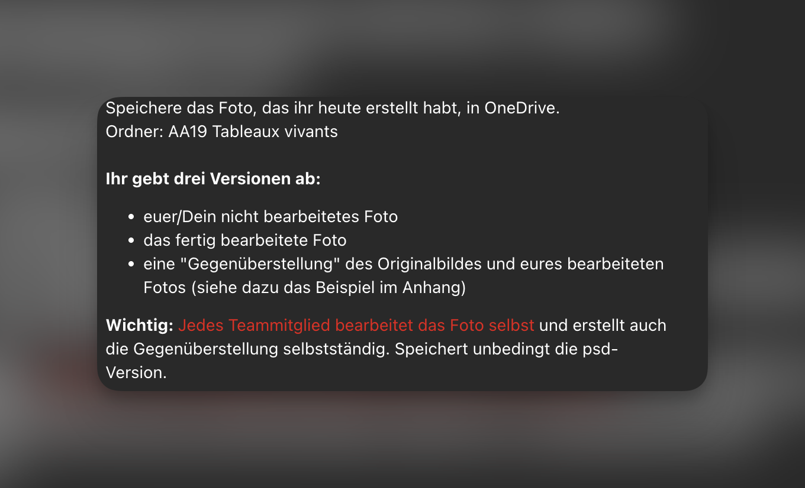

Tableaux
Vivants
Nachstellen eines klassischen Gemäldes als Fotografieprojekt — mit Bildbearbeitung und Gegenüberstellung von Original und Nachstellung.
Lernsituation
Im Rahmen des MINF-Unterrichts gestalteten wir ein Tableaux-vivants-Projekt: Wir stellten ein klassisches Gemälde fotografisch nach. Dazu wählten wir Pose, Kostüm und Lichtstimmung passend zum Original aus und fotografierten die Szene.
Jedes Teammitglied bearbeitete das Foto anschließend selbst in Photoshop und erstellte eigenständig eine Gegenüberstellung des Originalgemäldes und der bearbeiteten Nachstellung. Die Abgabe erfolgte als nicht bearbeitetes Originalfoto, bearbeitetes Foto sowie die Gegenüberstellung — gespeichert im OneDrive-Ordner AA19 Tableaux vivants.

Abgabeversionen
Kompetenzen
- Bildkomposition: Analyse und Nachstellung eines klassischen Gemäldes
- Fotografie: Einsatz von Licht, Pose und Requisiten
- Bildbearbeitung in Photoshop: Retusche, Farbkorrektur, Compositing
- Gegenüberstellung: Layouterstellung mit Original und Nachstellung
- Dateimanagement: Strukturiertes Speichern in OneDrive (PSD, JPG)
Ergebnis
Als Vorlage diente das Gemälde Bildnis eines Mannes mit blauem Chaperon von Jan van Eyck. Die Nachstellung wurde mit einem blauen Tuch als Kopfbedeckung und passendem schwarzen Hintergrund umgesetzt. Die Gegenüberstellung zeigt Original und Foto nebeneinander.